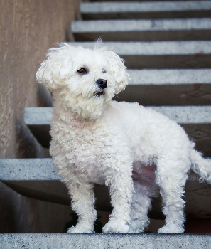
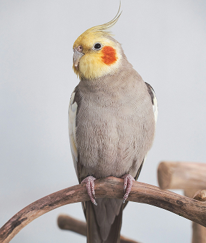
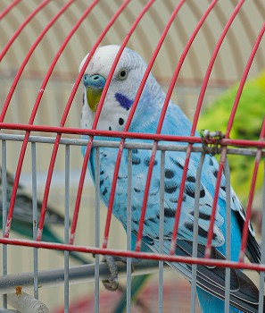
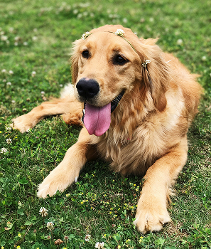

팝업
찾습니다
가족을 찾습니다
-
실종
스텐다드 푸들
- 실종장소 경기도 수원시 권선구 스타벅스 수원탑동DT점 근처 논밭
- 실종날짜 2025-5-20
- 특이사항 미용한지 얼마 안지나 몸털이 짧음
-
종료
브리티시 쇼트헤어
- 실종장소 경기도 고양시 덕양구 원흥동 426-6 집에서 가출, 원흥동 유진민속박물관 부근
- 실종날짜 2025-05-05
- 특이사항 회색 휜색 섞인 털을 가지고 있고 눈은 호박색입니다 최근에 털을 다 밀어서 몸전체에 털이 짧아보입니다.
-
실종
말티즈
- 실종장소 전라북도 부안군 가력도항
- 실종날짜 2025-05-04
- 특이사항 정말 작아요. 순하고 정말 하얘요. 자주 헥헥거리고 사람을 잘 따라요.
-
실종
앵무새
- 실종장소 서울특별시 서초구 양재동 온누리교회 인근
- 실종날짜 2025-04-24
- 특이사항 사람 어깨에 앉거나 핸드폰 위에 잘 앉아요.
주인을 찾습니다
-
목격
조류(사랑앵무)
- 실종장소 서울특별시 용산구 효창공원앞역 롯데캐슬 102동 앞
- 실종날짜 2025-04-06
- 특이사항 실종당시 하네스 발목링 없고 사람 손을 탑니다. 윙트리밍 안되어있습니다.
-
종료
골든 리트리버
- 실종장소 경기도 파주시 경기도 파주시 오금리미곡처리장이 보이는 만우천
- 실종날짜 2025-05-16
- 특이사항 털 색깔도 갈색과 흰색이 섞여있고, 다리도 웰 시보다 긴편입니다.
-
구조
포메라니언
- 실종장소 광주광역시 광산구 광산구 송촌동148-5 집앞
- 실종날짜 2025-05-09
- 특이사항 흰색에 몸통만 털이 짧게 깍았어요.
-
목격
믹스묘
- 실종장소 전라북도 김제시 죽산면 명마마을
- 실종날짜 2025-05-15
- 특이사항 흰색고양이며 얼굴 양쪽이 털이 많지않아 분홍색이 세로줄처럼 보입니다.